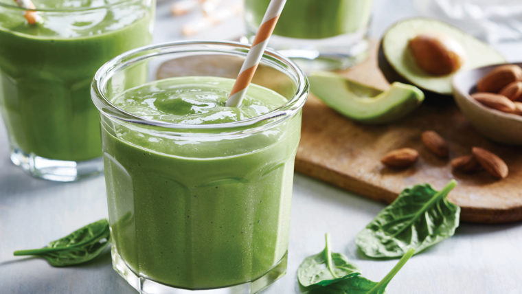
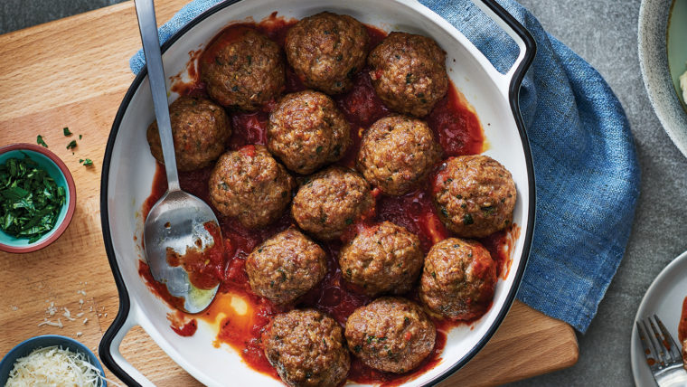
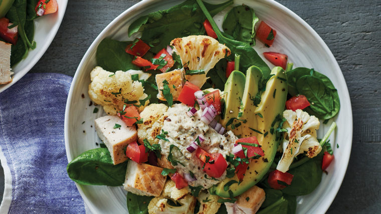

-
Tropical Green Smoothie

Ingredients:
- Baby Spinach (2 cups)
- Vanilla Yoghurt (1/2 Cup)
- Unsweetened Almond Beverage (2 1/2 Cups)
- Frozen Mango Pieces (1 Cup)
- Banana Pieces (1 Cup)
- Diced Avocado (1/2 Cup)
Directions:
- Puree spinach, yogurt and almond beverage in blender.
- Add mango, banana and avocado. Blend until smooth.
-
Italian-Style Soft Meatballs

Ingredients:
- 2 lb mixed ground meats (equal parts lean ground beef, pork, veal)
- 2 eggs
- 1 cup milk
- 2/3 cup fresh or dry breadcrumbs
- 1/2 cup grated Parmesan
- 1/2 cup finely chopped fresh parsley
- 1/4 cup grated onion
- 2 cloves garlic, minced
- 1 tsp each salt and pepper
- pinch ground nutmeg
- 2 tbsp olive oil
Directions:
- Preheat oven to 200°C (400°F). Line a baking sheet with parchment paper.
In large bowl, use hands to mix together ground meats, eggs, milk, breadcrumbs,
Parmesan, parsley, onion, garlic, salt, pepper and nutmeg. Cover and chill about 10 min.
for mixture to firm up.
- Using 1/3 cup (75 mL) measure, fill to rim with meat mixture. Unmold and roll into ball.
Make 16 meatballs.
-
Heat olive oil in large non-stick skillet on medium heat. Working in batches, brown
meatballs on all sides, 3 to 5 min. Transfer to prepared baking sheet. Bake 15 to 18 min.
until cooked through and internal temperature reaches 74˚C (165˚F).
-
Cauliflower Keto Bowls

Ingredients:
- Sunflower Seed Hummus:
- 1 cup raw, unsalted sunflower seeds
- 1 cup unsweetened almond beverage
- 2 tsp lemon zest
- 1/4 cup lemon juice
- 3 tbsp olive oil
- 2 cloves garlic, minced
- 1 tsp ground cumin
- pinch each of salt and pepper
- Keto Bowls:
- 6 cups small cauliflower florets
- 2 tbsp olive oil
- 6 cups loosely packed baby spinach
- 2 cups chopped cooked chicken or turkey
- 1 avocado, thinly sliced
- 1/2 cup tomato salsa
- 1/4 cup finely chopped fresh parsley
Directions:
-
For the hummus, soak sunflower seeds in almond beverage 2 hr. (or overnight).
Reserve 1/2 cup (125 mL) soaking liquid (discard the rest) and drain the seeds.
-
In blender or food processor, place soaked seeds, reserved soaking liquid, lemon zest,
lemon juice, olive oil, garlic, cumin, salt and pepper; pulse until smooth. Hummus can be
made up to 3 days ahead and chilled.
-
Preheat oven to 220˚C (425˚F). Line a baking sheet with parchment paper. Toss together
cauliflower and oil. Arrange in single layer on lined sheet. Roast 20 to 25 min., turning
halfway through, until tender and lightly charred.
- Divide spinach into 4 bowls. Top with roasted cauliflower, chicken, avocado, salsa,
hummus and parsley.